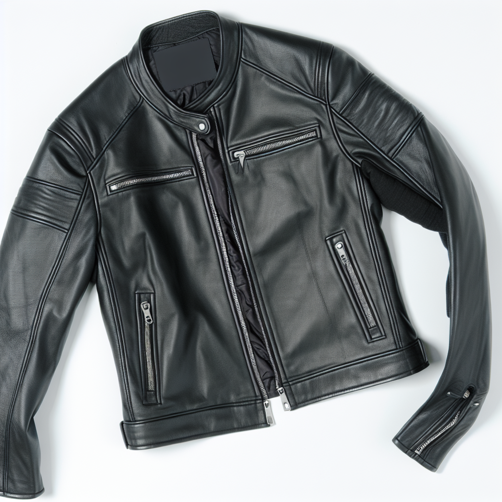
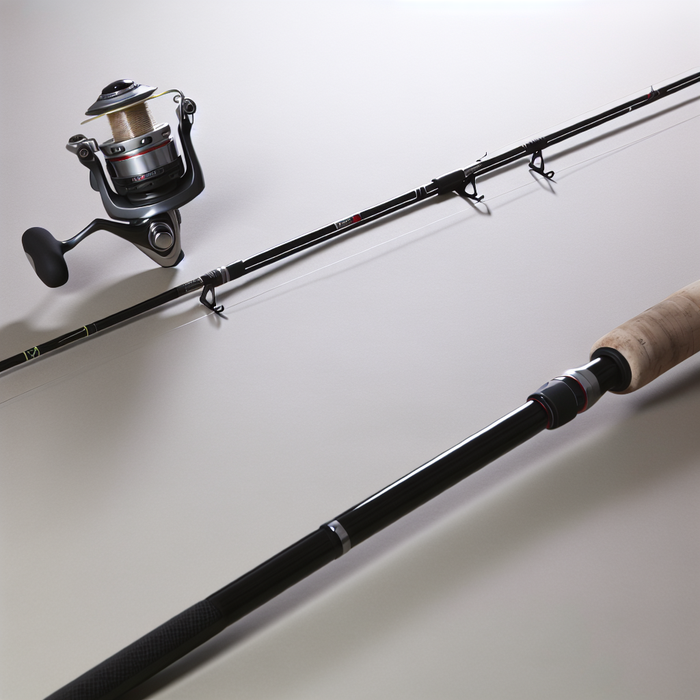
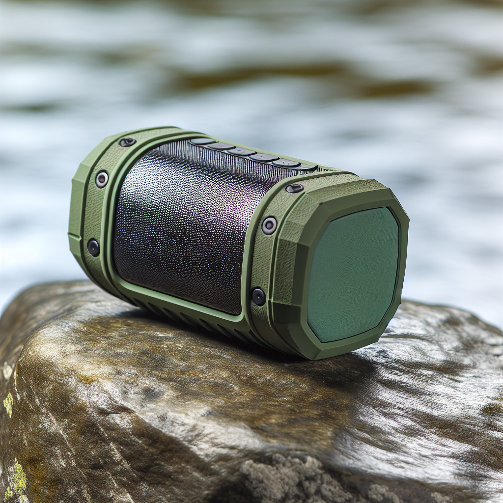
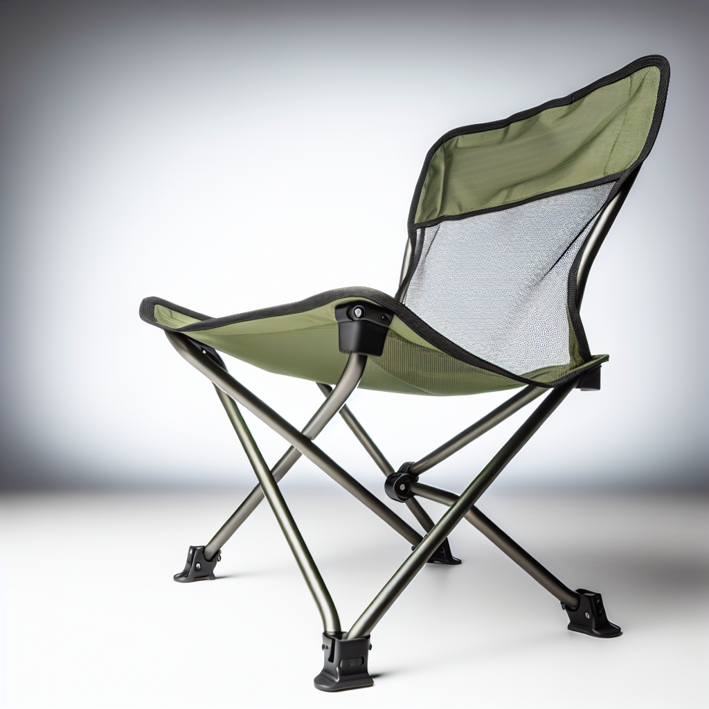

Plan Your Visit
Small town. Big personality. More to do than you'd expect.
Rabbit Hash isn't a theme park — it's a place. The whole town is maybe a dozen historic buildings strung along Lower River Road above the Ohio. But what it lacks in acreage it makes up for in atmosphere. Come for the General Store, stay for the river view, leave planning your next visit.
10021 Lower River Rd · The Heart of Town
Built around 1831 and on the National Register of Historic Places, the General Store is the soul of Rabbit Hash. It burned to a shell in February 2016 and was painstakingly rebuilt using salvaged period-correct lumber from other historic structures across the region — reopening April 1, 2017, with its historic designation intact.
Today it sells local gifts, Kentucky goods, antiques, cold drinks, and stories. Bring cash. Don't rush. Talk to whoever's behind the counter — they've heard everything and have better stories than you do.
Free · Best at golden hour
The Ohio River runs right past town, wide and brown and ancient. There's a gravel bar when the water's low, and the view across to Ohio is one of those simple, timeless things that reminds you why river towns exist. Watch the barges drift. Let your dog swim if you brought one.
Spring flooding can change river access — check conditions if you're planning your whole visit around the bank.
Spring through Fall · Weekend Favorite
Rabbit Hash has been a legendary motorcycle destination for decades. The winding roads through Boone County and along the river are some of the best riding in the tri-state area. On nice weekends, bikes line Lower River Road and the parking area fills with everything from vintage Harleys to sport bikes.
The General Store porch is the unofficial staging area. If you're riding through Northern Kentucky, this is a mandatory stop.
Seasonal · Check the Historical Society for dates
Rabbit Hash punches way above its weight for live music and community gatherings. Bluegrass, folk, and country spill out of the venues on summer and fall weekends. The annual Rabbit Hash Days festival brings out the whole community and then some.
Check the Rabbit Hash Historical Society for current event listings before you go.
Self-guided · Free · 330 acres listed on the NRHP
The Rabbit Hash Historic District encompasses 330 acres, 12 buildings, 6 structures, and 3 objects along Lower River Road — all added to the National Register of Historic Places in December 2003. Grab a coffee from the General Store and walk the stretch slowly.
The architecture tells the story of a 19th-century river trading community. The flood marks on some buildings tell another story entirely. Both are worth reading.
Kentucky fishing license required
The Ohio River is home to catfish, bass, sauger, and more. Bank fishing near Rabbit Hash is popular on calm days, especially in early morning and evening. The river's wide here and the current is worth respecting — sturdy tackle and patience recommended.
Kentucky fishing licenses are available online through the Kentucky Fish & Wildlife department.
Whether you're riding in, fishing the Ohio, or just exploring — grab the right gear on Amazon before you go.

Essential for the road to Rabbit Hash
Shop on Amazon →
Ohio River runs big cats
Shop on Amazon →
River + music = perfect afternoon
Shop on Amazon →
Park by the river and settle in
Shop on Amazon →